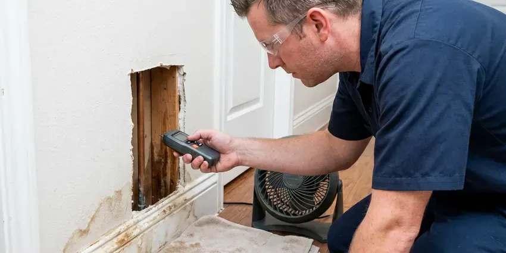

Walls Waterproofing in Lakewood, OH
Hidden moisture in a wall usually starts at a pipe, a pan or a sprinkler head. We trace it and seal the wall in Lakewood, OH.
- Sump Pump Installation
- Written Quotes Before Work Starts
- Free Written Estimates
- Thermal Imaging and Moisture Meters

Damp Basement? Get Walls Waterproofed in Lakewood, OH.
Call and we will trace the moisture with meters and thermal imaging before recommending any waterproofing.
Lasting Waterproofing for Showers, Block and Foundations in Lakewood, OH
HRL Plumbing uses cementitious coatings and injection resins rated for below-grade walls, not paint-store sealers. Those sealers peel. A proper repair in your Lakewood, OH home starts with a moisture reading on the block, then either crack injection or a drainage fix, then a coating that can take water pushing from the soil side.
Work we handle every week:
- Sump pit and pump installation with battery backup
- Exterior foundation membrane installation
- Below-grade wall waterproofing for basements and crawl spaces

Additional Plumbing Maintenance Services in Lakewood, OH
Our maintenance and specialty plumbing services in Lakewood, OH protect your home year-round and extend the life of every system.


Customers
Why Choose HRL Plumbing for Walls Waterproofing in Lakewood, OH?
Waterproofing a wall without fixing the leak behind it just hides the problem for a while. We find the source, repair it and let the cavity dry out before any sealer or membrane goes on, even if that adds a day or two to the schedule. Patching over water fails.
- Source First, We fix the plumbing or drainage problem before any waterproofing goes on.
- Mold Prevention, Drying and sealing a wall quickly keeps mold from taking hold.
- Rated Membranes, We install manufacturer-approved systems rated for wet areas.
Citywide Coverage
Our trucks cover all of Lakewood and the towns around it. A wet basement on the far edge of town gets the same written quote and moisture survey as one a mile from our shop, and we schedule by how urgent the leak is, not by zip code. Distance does not change that.
Experienced Team
Hundreds of leaking showers and damp walls have been rebuilt by our crew. They understand how water moves through block, stucco, plaster and drywall, and that it often shows up two or three feet from where it started. Tracing is the skill.
Safety-First Approach
Shower waterproofing follows plumbing code and the manufacturer's rules for slope, curb height and drain connections. We flood test every pan for 24 hours before the tile setter starts, and we photograph the water line at the start and the end of the test. If the water level drops, we rebuild the pan.
Trusted Certified Lakewood Plumbing Services Professionals
At HRL Plumbing, we take pride in licensed, certified plumbing services throughout Lakewood, OH. Those papers on the wall mean something. Every repair, install and maintenance visit follows strict safety and quality rules, and the plumbers doing the work carry recognized industry credentials.
Call Us Now PHCC Plumbing Contractor Recognition
PHCC Plumbing Contractor Recognition Better Business Bureau (BBB) Accreditation
Better Business Bureau (BBB) Accreditation Angi Certified Pro
Angi Certified Pro ISO 9001 Quality Management Certification
ISO 9001 Quality Management CertificationFoundation, Shower and Block Wall Waterproofing in Lakewood, OH
Exterior Block Wall Waterproofing in Lakewood, OH
White crust on block or stem walls is efflorescence, salt left behind as water moves through the masonry and dries. The usual cause is a sprinkler head spraying the wall instead of the plants, or soil graded toward the foundation. We fix the water first. After that the wall gets cleaned, dried and coated with a breathable masonry sealer or elastomeric coating.

Crawl Space Vapor Barriers in Lakewood
Bare dirt in a crawl space releases gallons of water vapor a day into the air under your floor. A 10 mil or heavier polyethylene barrier, lapped 12 inches at the seams and taped, cuts that off and keeps the joists and subfloor dry. We run it up the foundation walls and hold it in place with termination strip. It is a cheap fix that makes a big difference.
Waterproofing Costs vs. Repeat Water Damage in Lakewood, OH
Paying once beats paying every two years. Waterproofing a shower wall usually lands in the low thousands, while replacing drywall, cabinets and flooring again and again costs far more, and mold remediation on top of that can double the bill. The price for exterior block sealing depends on how much wall there is. Your quote lists each option with its price.
Foundation Crack Repair & Sealing in Lakewood
Hairline cracks in poured concrete walls leak more water than their size suggests. We inject them with low-pressure polyurethane, which expands to fill the crack from the inside face to the soil side, or with epoxy when the crack also needs structural bonding. Horizontal cracks are different. A horizontal crack often signals soil pressure pushing the wall in, so we check for movement with a level before we seal anything. Vertical cracks are usually a one-visit job.
Basement Wall Sealing in Lakewood, OH
Concrete block is porous, and its hollow cores fill with water like a sponge. A long heating season keeps water heaters and boilers working hard, so annual maintenance helps avoid midwinter breakdowns. We drill weep holes at the bottom course to drain the cores, then seal the face with a masonry waterproofer that lets vapor out but stops liquid water. The musty smell usually fades within weeks. The weep holes empty into interior drain tile when there is one.
Interior Walls Waterproofing in Lakewood, OH
Interior drain tile handles water that already got through the wall. We cut a channel in the slab along the perimeter, lay perforated pipe in washed stone, and tie it into a sump pit so the pump can push the water outside. The wall still gets wet. The difference is that the water no longer ends up on your floor. This route costs less than digging outside and makes sense when a patio or driveway sits against the foundation.
Foundation Crack Repair in Lakewood
Crack injection takes about two hours per crack. We set injection ports every 8 to 12 inches along the crack, seal the surface with epoxy paste, and pump in resin from the bottom port up until it pushes out the next port. Polyurethane flexes a bit if the wall shifts, and epoxy bonds the two sides back together. The surface paste gets ground off once it cures.

Crawl Space Encapsulation in Lakewood
Encapsulation seals the whole crawl space, walls and floor, with a reinforced poly liner. We run 12 to 20 mil liner up the walls, tape every seam, seal around piers and pipe penetrations, and usually add a dehumidifier to hold humidity under 60 percent. A long heating season keeps water heaters and boilers working hard, so yearly maintenance helps avoid midwinter breakdowns. Wood rot slows to a stop. Drier air under the floor also means less musty air upstairs.
Wall Waterproofing Near Me in Lakewood, OH
Water in a wall does not wait for a convenient week. We keep open slots for active leaks, and when a pipe is still dripping inside the wall we can shut it off, open the drywall and start drying the cavity that same day. Drying usually takes three to five days.
Homes around Lakewood share a handful of common builds, including slab ranches, block crawl spaces and full poured basements. Each one has its usual leak points, and knowing them helps us find the water source on the first pass instead of opening walls to look. Being nearby makes warranty visits quick.
HRL Plumbing at a Glance
- Fully licensed plumbing team covering Lakewood, OH
- Same-day appointments and 24/7 emergency response
- Clear written estimates, no hidden fees
- 4.9-star rated by 673+ Ohio customers
Lakewood Map
Lakewood Information
- Population
- 49,337
- Area codes
- 216/440/330
- Service area
- Lakewood and communities within 40 miles
- Nearby
- Cleveland, Parma, Euclid, Elyria
Foundation walls in Lakewood, OH take water from two directions, rain soaking the soil outside and hydrostatic pressure pushing through cracks and porous block.
Expert Services
Call HRL Plumbing for reliable plumbing work done by licensed pros in Lakewood, OH.
Our Specialized Plumbing Services in Lakewood, OH
At HRL Plumbing, you get every kind of plumbing service from one company across Lakewood, OH. From leak detection to full system installs, our team works fast and charges fair prices on homes and commercial properties alike. Take a look at our core services below:


From Damp Wall to Sealed Wall in Lakewood, OH
Most of the work is diagnosis. Once the source is known, the sealing goes quickly.
Request a Quote
Call (740) 449-7505 or use the online form. We book a time that fits your schedule for the on-site visit.
Detailed Inspection
Our tech tracks down where the water is coming from and checks how far the damage reaches. You get the findings in plain terms.
Custom Solution
We build the plan around the leak and the type of foundation, and pick materials that suit the wall.
Frequently Asked Questions About Walls Waterproofing in Lakewood
Most jobs fall between $3,000 for interior crack sealing and $15,000 or more for exterior excavation with new footing drains. The size of the wall, how wet it gets, the method we pick and how easy the wall is to reach all move the number. Access is a big one. You get a written quote before any work starts.
Small crack patches, sure. A complete system takes knowledge of drainage, foundation behavior and the application steps for each product, and mistakes are expensive because they hide behind finished walls for years. Most DIY failures we see started at the footing joint.
Patching one small crack yourself is fine. A full system involves excavation, digging equipment, proper membrane thickness and knowing how water drains around a footing, plus local code on drainage and backfill. A bad install can trap water against the wall and make things worse.
Xypex, Tremco, Sika and Henry products show up on a lot of our jobs, covering crystalline products, elastomeric membranes and sealants. The product depends on the wall. Crystalline coatings work well on poured concrete, but block walls usually call for an elastomeric membrane or drainage board.
Every install gets a written warranty on materials and workmanship. Your proposal lists exactly what is covered and for how long, and when a manufacturer offers its own warranty on a membrane or resin we register it in your name. Keep the paperwork with your house records.
Often, but not always. A remodel that moves the valve, changes the drain location or alters supply piping usually needs a permit, while replacing a failed membrane on the existing layout may not. We check your local rules and pull the permit when one is needed.
Yes. Our installs carry a written warranty on labor and materials, and the length depends on the system we put in, while many membranes and injection resins also come with a manufacturer warranty. The details are spelled out in your service agreement.
Yes, a lot. Stopping liquid water at the wall brings the humidity in the basement down, and pairing it with a dehumidifier set around 50 percent keeps the air dry enough that mold and mildew have a hard time growing on stored boxes and framing. The musty smell tends to fade within a few weeks.
What Our Customers Say About Our Plumbing Experts

Rachel N.
Hard water was leaving white crust on every faucet and our dishwasher was struggling. The tech tested the water, recommended a softener sized for a family of five, and installed it with a bypass valve in one afternoon. The spots on our glasses are gone.
Water Softener · Parma, OH
James P.
Our restaurant had a slow leak at the hand sink that was rotting the cabinet base. HRL Plumbing came in at six in the morning before prep, replaced the trap and both supply lines, and was packed up before my first cook clocked in.
Commercial Plumbing · Cleveland, OHLisa C.
Water was pouring out from under the washing machine on a holiday weekend. HRL Plumbing talked me through closing the valves over the phone and had a plumber at the house within ninety minutes. It was a burst fill hose.
Emergency Plumbing · Parma, OH
Tyler J.
We bought a taller comfort height toilet for my dad, who just had knee surgery. The plumber pulled the old one, found the flange was cracked, and replaced it before setting the new bowl. Took about two hours.
Toilet Installation · Lakewood, OH
Jessica T.
We were adding a gas range in a kitchen remodel and needed a new line run from the meter. The plumber pulled the permit, ran the pipe through the crawl space, and had it inspected and approved within the week.
Gas Line Repair · Cuyahoga Falls, OHMonica A.
Our water bill nearly doubled in one month with no change in how we used water. The tech checked the meter, heard the leak under the hallway with his equipment, and opened a hole about a foot square. Fixed the same day.
Slab Leak Repair · Cuyahoga Falls, OH